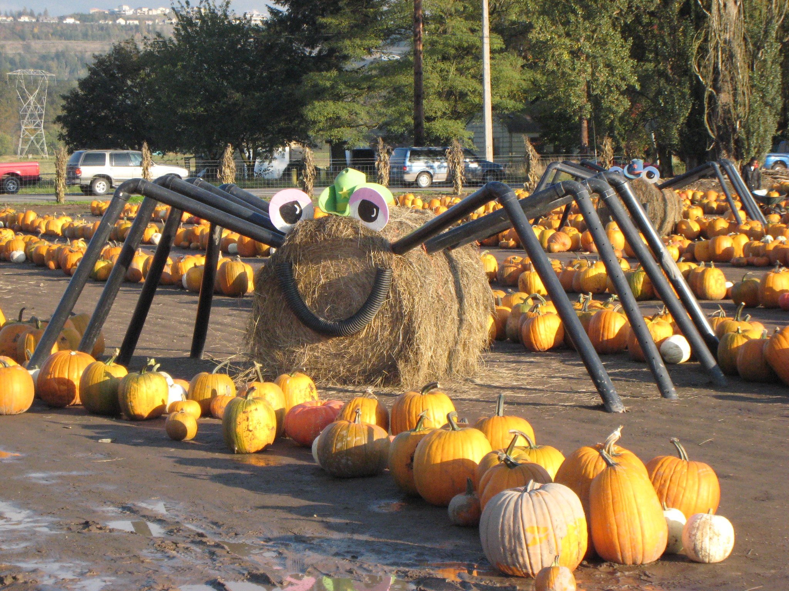

Fall in Tacoma is a time of eating, pumpkin-themed activities, and spending time with family. Halloween tops off fall as the season's biggest festivity. This webpage is dedicated to describing Tacoma's special way of celebrating fall.
Spooner Farms, located right outside of Tacoma in Puyallup, has a pumpkin patch full of family fun. They also have a corn maze and spiders like this for a great family photo-op.
The festival will be happening from September 28th- October 31st.
Another fun attraction in Fall is haunted houses! In Tacoma, the scariest event of the year is at FreightHouse Station on 2501 East G Street, Tacoma. The event runs on October 10-12, 17-19, 24-26, and 31-2 from 7:00-10:00 on Thursdays and 7:00-11:00 on Fridays and Saturdays. It is around $15 per person.
Citations: